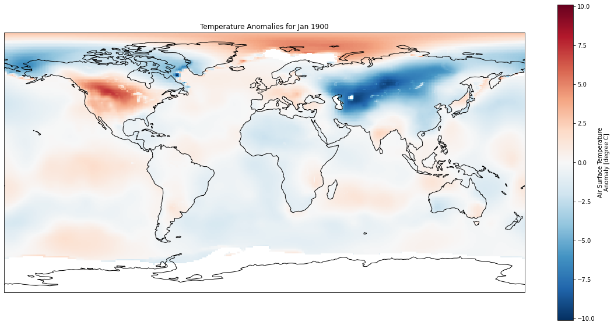
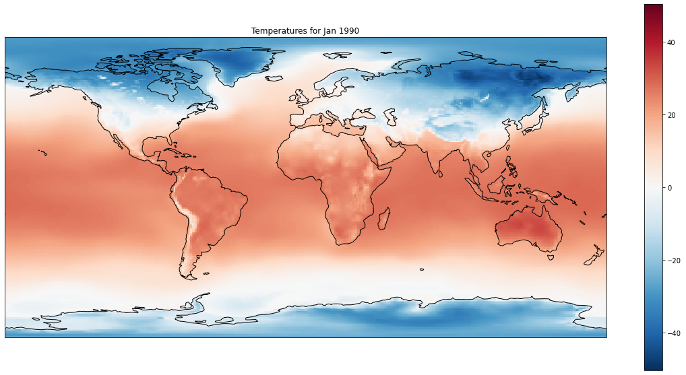
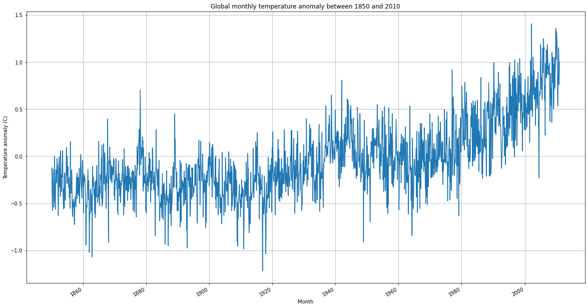

Plot global temperature anomalies from Berkeley Earth#
© Von P. Walden, Washington State University
The data used in this notebook are from Berkeley Earth: Land_and_Ocean_LatLong1.nc
import matplotlib.pyplot as plt
import cartopy.crs as ccrs
import pandas as pd
import xarray as xr
Working from your local computer#
If you are running this notebook from your local computer, you will need to:
Download a large (400 MB) data file from Berkeley Earth by clicking on this link
Edit the code cell below by replacing ‘../Land_and_Ocean_LatLong1.nc’ with the pathname to the data file on your local hard drive.
be = xr.open_dataset('../../Land_and_Ocean_LatLong1.nc')
#be = xr.open_dataset('/Users/vonw/work/courses/2021-2022/spring/CE401/jupyterbook/CE401/Land_and_Ocean_LatLong1.nc')
be
---------------------------------------------------------------------------
KeyError Traceback (most recent call last)
File /opt/hostedtoolcache/Python/3.8.18/x64/lib/python3.8/site-packages/xarray/backends/file_manager.py:209, in CachingFileManager._acquire_with_cache_info(self, needs_lock)
208 try:
--> 209 file = self._cache[self._key]
210 except KeyError:
File /opt/hostedtoolcache/Python/3.8.18/x64/lib/python3.8/site-packages/xarray/backends/lru_cache.py:55, in LRUCache.__getitem__(self, key)
54 with self._lock:
---> 55 value = self._cache[key]
56 self._cache.move_to_end(key)
KeyError: [<function _open_scipy_netcdf at 0x7f7c1712a940>, ('/home/runner/work/CE401/Land_and_Ocean_LatLong1.nc',), 'r', (('mmap', None), ('version', 2)), 'f62ed645-0b20-4fd1-bdc3-b63a649535e5']
During handling of the above exception, another exception occurred:
FileNotFoundError Traceback (most recent call last)
Cell In[2], line 1
----> 1 be = xr.open_dataset('../../Land_and_Ocean_LatLong1.nc')
2 #be = xr.open_dataset('/Users/vonw/work/courses/2021-2022/spring/CE401/jupyterbook/CE401/Land_and_Ocean_LatLong1.nc')
3 be
File /opt/hostedtoolcache/Python/3.8.18/x64/lib/python3.8/site-packages/xarray/backends/api.py:541, in open_dataset(filename_or_obj, engine, chunks, cache, decode_cf, mask_and_scale, decode_times, decode_timedelta, use_cftime, concat_characters, decode_coords, drop_variables, inline_array, backend_kwargs, **kwargs)
529 decoders = _resolve_decoders_kwargs(
530 decode_cf,
531 open_backend_dataset_parameters=backend.open_dataset_parameters,
(...)
537 decode_coords=decode_coords,
538 )
540 overwrite_encoded_chunks = kwargs.pop("overwrite_encoded_chunks", None)
--> 541 backend_ds = backend.open_dataset(
542 filename_or_obj,
543 drop_variables=drop_variables,
544 **decoders,
545 **kwargs,
546 )
547 ds = _dataset_from_backend_dataset(
548 backend_ds,
549 filename_or_obj,
(...)
557 **kwargs,
558 )
559 return ds
File /opt/hostedtoolcache/Python/3.8.18/x64/lib/python3.8/site-packages/xarray/backends/scipy_.py:307, in ScipyBackendEntrypoint.open_dataset(self, filename_or_obj, mask_and_scale, decode_times, concat_characters, decode_coords, drop_variables, use_cftime, decode_timedelta, mode, format, group, mmap, lock)
305 store_entrypoint = StoreBackendEntrypoint()
306 with close_on_error(store):
--> 307 ds = store_entrypoint.open_dataset(
308 store,
309 mask_and_scale=mask_and_scale,
310 decode_times=decode_times,
311 concat_characters=concat_characters,
312 decode_coords=decode_coords,
313 drop_variables=drop_variables,
314 use_cftime=use_cftime,
315 decode_timedelta=decode_timedelta,
316 )
317 return ds
File /opt/hostedtoolcache/Python/3.8.18/x64/lib/python3.8/site-packages/xarray/backends/store.py:32, in StoreBackendEntrypoint.open_dataset(self, store, mask_and_scale, decode_times, concat_characters, decode_coords, drop_variables, use_cftime, decode_timedelta)
20 def open_dataset(
21 self,
22 store,
(...)
30 decode_timedelta=None,
31 ):
---> 32 vars, attrs = store.load()
33 encoding = store.get_encoding()
35 vars, attrs, coord_names = conventions.decode_cf_variables(
36 vars,
37 attrs,
(...)
44 decode_timedelta=decode_timedelta,
45 )
File /opt/hostedtoolcache/Python/3.8.18/x64/lib/python3.8/site-packages/xarray/backends/common.py:128, in AbstractDataStore.load(self)
106 def load(self):
107 """
108 This loads the variables and attributes simultaneously.
109 A centralized loading function makes it easier to create
(...)
125 are requested, so care should be taken to make sure its fast.
126 """
127 variables = FrozenDict(
--> 128 (_decode_variable_name(k), v) for k, v in self.get_variables().items()
129 )
130 attributes = FrozenDict(self.get_attrs())
131 return variables, attributes
File /opt/hostedtoolcache/Python/3.8.18/x64/lib/python3.8/site-packages/xarray/backends/scipy_.py:174, in ScipyDataStore.get_variables(self)
172 def get_variables(self):
173 return FrozenDict(
--> 174 (k, self.open_store_variable(k, v)) for k, v in self.ds.variables.items()
175 )
File /opt/hostedtoolcache/Python/3.8.18/x64/lib/python3.8/site-packages/xarray/backends/scipy_.py:163, in ScipyDataStore.ds(self)
161 @property
162 def ds(self):
--> 163 return self._manager.acquire()
File /opt/hostedtoolcache/Python/3.8.18/x64/lib/python3.8/site-packages/xarray/backends/file_manager.py:191, in CachingFileManager.acquire(self, needs_lock)
176 def acquire(self, needs_lock=True):
177 """Acquire a file object from the manager.
178
179 A new file is only opened if it has expired from the
(...)
189 An open file object, as returned by ``opener(*args, **kwargs)``.
190 """
--> 191 file, _ = self._acquire_with_cache_info(needs_lock)
192 return file
File /opt/hostedtoolcache/Python/3.8.18/x64/lib/python3.8/site-packages/xarray/backends/file_manager.py:215, in CachingFileManager._acquire_with_cache_info(self, needs_lock)
213 kwargs = kwargs.copy()
214 kwargs["mode"] = self._mode
--> 215 file = self._opener(*self._args, **kwargs)
216 if self._mode == "w":
217 # ensure file doesn't get overridden when opened again
218 self._mode = "a"
File /opt/hostedtoolcache/Python/3.8.18/x64/lib/python3.8/site-packages/xarray/backends/scipy_.py:102, in _open_scipy_netcdf(filename, mode, mmap, version)
99 filename = io.BytesIO(filename)
101 try:
--> 102 return scipy.io.netcdf_file(filename, mode=mode, mmap=mmap, version=version)
103 except TypeError as e: # netcdf3 message is obscure in this case
104 errmsg = e.args[0]
File /opt/hostedtoolcache/Python/3.8.18/x64/lib/python3.8/site-packages/scipy/io/_netcdf.py:246, in netcdf_file.__init__(self, filename, mode, mmap, version, maskandscale)
244 self.filename = filename
245 omode = 'r+' if mode == 'a' else mode
--> 246 self.fp = open(self.filename, '%sb' % omode)
247 if mmap is None:
248 # Mmapped files on PyPy cannot be usually closed
249 # before the GC runs, so it's better to use mmap=False
250 # as the default.
251 mmap = (not IS_PYPY)
FileNotFoundError: [Errno 2] No such file or directory: '/home/runner/work/CE401/Land_and_Ocean_LatLong1.nc'
Plot geographic distribution of 1951-1980 climatology#
# Select a particular month to view
month = 'Jan'
#month = 'Jul'
months = ['Jan', 'Feb', 'Mar', 'Apr', 'May', 'Jun', 'Jul', 'Aug', 'Sep', 'Oct', 'Nov', 'Dec']
fig = plt.figure(figsize=(20,10))
ax = plt.axes(projection=ccrs.PlateCarree())
ax.coastlines()
be.climatology[months.index(month)].plot(ax=ax)
plt.title('Climatology (1951-1980) for ' + month);

Plot geographic distribution of temperature anomalies for given year and month#
# Select a particular year and month to view
year = 1900
month = 'Jan'
#month = 'Jul'
months = ['Jan', 'Feb', 'Mar', 'Apr', 'May', 'Jun', 'Jul', 'Aug', 'Sep', 'Oct', 'Nov', 'Dec']
fig = plt.figure(figsize=(20,10))
ax = plt.axes(projection=ccrs.PlateCarree())
ax.coastlines()
(be.temperature[months.index(month)+((year-1850)*12)]).plot(ax=ax, clim=[-10, 10])
plt.title('Temperature Anomalies for ' + month + ' ' + str(year));

Plot geographic distribution of actual temperatures for given year and month#
# Select a particular year and month to view
year = 1990
month = 'Jan'
#month = 'Jul'
months = ['Jan', 'Feb', 'Mar', 'Apr', 'May', 'Jun', 'Jul', 'Aug', 'Sep', 'Oct', 'Nov', 'Dec']
fig = plt.figure(figsize=(20,10))
ax = plt.axes(projection=ccrs.PlateCarree())
ax.coastlines()
(be.temperature[months.index(month)+((year-1850)*12)] + be.climatology[months.index(month)]).plot(ax=ax, clim=[-10, 10])
plt.title('Temperatures for ' + month + ' ' + str(year));

Calculate global annual temperature anomalies#
# Select a particular year and month to view
# !! Depending on how many years you choose to analyze, this COULD TAKE TENS OF SECONDS to complete.
beginning_year = 1850
ending_year = 2010
months = pd.date_range(start=str(beginning_year), end=str(ending_year+1), freq='M')
data = []
for month in months:
#print(month.month)
data.append(be.temperature[month.month+((month.year-1850)*12)].mean())
Tanomalies = xr.DataArray(data, coords={'month': months})
fig = plt.figure(figsize=(20,10))
Tanomalies.plot()
plt.grid()
plt.xlabel('Month');
plt.ylabel('Temperature anomaly (C)');
plt.title('Global monthly temperature anomaly between ' + str(beginning_year) + ' and ' + str(ending_year));

Calculate longitudinally-averaged temperature anomalies#
# Select the latitude range to average over
beginning_latitude = -5
ending_latitude = 5
# Select a particular year and month to view
# !! Depending on how many years you choose to analyze, this COULD TAKE TENS OF SECONDS to complete.
beginning_year = 1950
ending_year = 2020
months = pd.date_range(start=str(beginning_year), end=str(ending_year+1), freq='M')
data = []
for month in months:
#print(month.month)
data.append(be.temperature[month.month+((month.year-1850)*12)].sel(latitude=slice(beginning_latitude, ending_latitude)).mean())
Tanomalies = xr.DataArray(data, coords={'month': months})
fig = plt.figure(figsize=(20,10))
Tanomalies.plot()
plt.grid()
plt.xlabel('Month');
plt.ylabel('Temperature anomaly (C)');
plt.title('Equatorial temperature anomaly between ' + str(beginning_year) + ' and ' + str(ending_year));